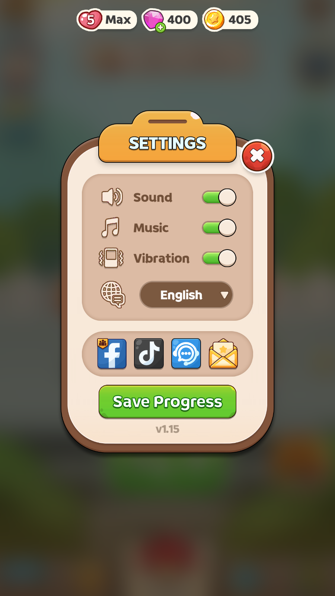

Lưu dữ liệu (local, R1, server)
Mô tả
- Dữ liệu người chơi nằm ở 3 tầng: (1) ba file MessagePack
progress.dat/profile.dat/liveops.dat(có.bak,.tmp), (2) các file JSON của module R1 trong thư mụcR1/(mã hoá XOR + base64, mỗi model 1 file + bản.X), (3) PlayerPrefs cho cờ nhỏ (tutorial, đánh giá, locale). - Ghi tự động mỗi khi dữ liệu đổi (đặt cờ, ghi ở cuối frame) và ngay khi app vào nền; nạp thử lần lượt file chính →
.tmp→.bak, hỏng cả thì chuyển vàocorrupt_savesvà tạo dữ liệu mới. - Mới ở 1.15: nút Save Progress ở Settings đẩy toàn bộ tiến độ lên server (lệnh
sg) hoặc kéo về (lg) quaSaveGameManager+SaveGameCodec(khốicore+r1+st+ tóm tắtsum), kèm hộp so sánh Day / avatar / khung giữa máy và server. - Khôi phục được làm hai pha an toàn (
CookOrderSaveSync: ghi vàorestore_pending, backuppre_restore_*, hoàn tất ở lần boot sau), nên mất điện giữa chừng không làm hỏng save. - Cloud save Play Games (
CloudSaveControllerAbstract) có code nhưng không được khởi tạo trong 1.15; hộp xung độtCanvas-CloudSaveDataConflictchỉ là Mockup.
Thiết kế chi tiết
Tóm tắt thiết kế
- Code 3 file MessagePack + JSON R1 mã hoá XOR + PlayerPrefs; ghi
.tmp→.bak→ main, nạp thử main →.tmp→.bak, hỏng cả thìcorrupt_saves(kiểm lại bằng chuỗi 1.15). - Playtest Save thật 16/11 giải được 100 %: progress.dat có 12 ô map (burger mở, 11 map Hidden gồm croissant), 20 level burger đã chơi,
newVersionNoticeOrder= 3. - Code Mới ở 1.15: Save Progress lên server (
lg/sg) với góiSaveGameModel= tóm tắt +core+r1+ thống kê; có hộp so sánh và kết quả OldVrs / WrongPl / OldAppVer. - Code Khôi phục hai pha qua
restore_pending+ backuppre_restore_*; mọi khối phải đọc được trước khi ghi (RejectRestore). - Code
PlayerServerIdentity(serverId, teamId)gắn profile với tài khoản server; sau khi kéo save,CanonicalizeProfileIdentitythay serverId trong profile bằng id hiện tại. - Nhận định Cloud save Play Games bị bỏ dở (có code, không có scene); hướng thiết kế là tự lưu server theo định danh thiết bị thay vì Play Services.
Luồng người chơi từng bước
- Chơi và ghi tự độngHệ thống CodeĐổi dữ liệu →
RequestSaveData→ ghi nền; vào nền →SaveAllNow. - Mở SettingsNgười chơi PlaytestThấy nút Save Progress dưới danh sách liên kết.

Nút xanh Save Progress trong popup Settings 1.15 (không bấm khi playtest) - So sánh với serverHệ thống Code
SyncDataWithServergọilg, parse, build, hiệnPopupSyncDataCtrl. - Chọn hướngNgười chơi CodeSave data to server (
sg) hoặc Load data from server. - Hoàn tấtHệ thống CodeĐẩy: popup hoàn tất; kéo: khôi phục hai pha rồi tải lại Home.

File local (save thật 16/11)
| File | Lớp | Nội dung chính | Byte đầu / cuối phiên |
|---|---|---|---|
| progress.dat | PlayerMapLevelProgressDataManager.RawData | maps[12], lastPlayed*, petAssistants, winStreak, newVersionNoticeOrder | 1 351 / 2 003 |
| profile.dat | PlayerProfileDataManager.RawData | packs: item (tiền, tim, booster, speed-up bank), system, profile, shop | 432 / 483 |
| liveops.dat | LiveOpsDataManager.RawData | packs: dailyreward, login7days | 165 / 165 |
| *.bak / *.tmp | - | Bản trước / bản đang ghi | progress.bak cuối 1 994 |
Nguồn: save_start / save_end; chi tiết key theo stub PlayerMapLevelProgressDataManager.
progress.dat — RawData (7 key)
| Key | Trường | Kiểu | Ví dụ 16/11 |
|---|---|---|---|
| 0 | maps | MapData[12] | burger Unlocked, 11 map Hidden |
| 1 | lastPlayedTime | DateTime | 2026-11-16T14:13:08Z |
| 2 | lastPlayedMapId | string | burger |
| 3 | lastPlayedLevelIndex | int | 19 |
| 4 | petAssistants | PetAssistantData[] | [] |
| 5 | winStreak | int | 0 |
| 6 | newVersionNoticeOrder | int | 3 |
Giống 1.11 (7 key). MapData giữ 12 key (4, 5, 9 trống): id, state, levelMains, levelAdvanceds, tools, numDayFinished, keyBools, boughtPartIds, isExtraLevelUnlocked.
profile.dat / liveops.dat — packs (key đáng chú ý ở 1.15)
| Pack | Khoá | Giá trị cuối phiên | Ghi chú |
|---|---|---|---|
| item | hard / soft | 620 / 600 | Gem / coin (khớp Playtest) |
| item | live, DurRcvHeart, TimeSetHeart | 1 / 1 633 / 14:04Z | Tim và đồng hồ hồi |
| item | booster_ingredient_pick, booster_shift_up_row, booster_stack_box | 1 / 0 / 0 | Booster còn lại |
| item | time-bank-speed_up, SpeedUpBankInit, SpeedUpRemainingSeconds | 263 / 1 / 300.0 | Mới so với 1.11: ngân hàng thời gian tăng tốc |
| system | countOpenDay, countOpen, firstTime, lastOpenTime | 7 / 10 / 25/10 / 16/11 | Số lần mở app |
| system | verFO, shop.offerShown.starter | 1.11, starter | verFO không đổi sau nâng cấp (Nhận định) |
| profile | name, avatarId, serverId, teamId | Player9357, ava_05, 584553, 0 | serverId nằm cả trong profile.dat |
| dailyreward | DailyRwLoginDays, DailyRwLoginDate | 2 / 2026-11-16 | Mới so với 1.11 |
| login7days | TakeXDayRw, LastClaimXDayRw | 3 / 12:44Z | Bitmask ngày đã nhận |
Nguồn: s2_save_tool.py dump save_end.
Model R1 (thư mục R1/)
| Tên file | Lớp | Byte (cuối phiên) | Nội dung | Trong save server? |
|---|---|---|---|---|
| JHwHd3yh0nPPGX65 | ProfileDbModel | 988 | serverId, tên, avatar, khung, huy hiệu, levelMain 19, rankScore, authKind DEI | Có (pr) |
| PRM3fB4BdFrkba0O | TeamDbModel | 88 | playTutorial, lastTimeAskLife, lastTimeLeaveTeam | Có (tm) |
| f76ArRxN2hoFCCSJ | LeaderboardDbModel | 28 | firstOpen | Có (lb) |
| FEyl4v1eKoFynqVG | WeeklyContestDbModel | 912 | currentWeek 202647, dataByWeek (4 tuần), listPlayer 10 serverId | Có (wc) |
| 8vKLItOjU33XziWi | EventSaleDbModel | 60 | halloween2026 [false × 4] | Có (es) |
| lL7FHktJKVN0r3Nl | SegmentDbModel | 2 116 | last, history, recentResults, interShows | Có (sgm) |
| Iodj9hcwnteafDIe | DreamyPassDbModel | 696 | activated false, 31 ô free + 31 ô pass | Không |
| bVSrtEFgq5hFG43P | DreamyStreakDbModel | 468 | streak 0, 25 ô, rewardTable 3 | Không |
| axppnMcao9DjMFMa | DreamyTowerDbModel | 736 | level 0, 66 ô | Không |
| 8km1sNsuhyzBnulr | TeamTreasureDbModel | 184 | rwStep [false × 3], point 0 | Không |
Mỗi file có thêm bản .X; tool mã lại byte-exact. Chỉ 6 model đầu nằm trong R1SaveBlock.
Gói save server (SaveGameModel)
| Trường | Ý nghĩa |
|---|---|
| sv, own, t, pl, aV | Schema 1; serverId chủ; thời gian; nền tảng; version code app |
| sum | Tóm tắt hiển thị: day, st (sao), gem, gold, iap, rmAds, nm (tên), av (avatar), fr (khung), bd (huy hiệu) |
| core | pf (profile.dat), pg (progress.dat), lo (liveops.dat), pp (PlayerPrefs int whitelist) |
| r1 | pr, tm, lb, wc, es, sgm |
| st | Thống kê: iapRevenueByCurrency, processedIapTransactionIds (≤ 100), bucket buck_iaa_ |
Nguồn: stub SaveGameModel, SaveGameSummary, CoreSaveBlock, R1SaveBlock, SaveGameStats.
Khoá PlayerPrefs trong save server
| Khoá | Ý nghĩa |
|---|---|
| TutFirstLv, TutShipper, TutBoss, TutPickUp, TutUpgrRes_Done, TutUpgrTool_Done, UIHint-FirstOpenDone | Tutorial đã xong |
| IntroLinkedSlot, IntroCombinedSlot, IntroSlotMechanic_<x>, IntroGridMechanic_<x> | Intro cơ chế |
| RateGame_Completed, RateGame_PrimarySkipped | Trạng thái hỏi đánh giá |
| Journey_LastSeenCompleted, join_fb, PlayedAnimUnlock | Journey, tham gia Facebook, hiệu ứng mở khoá |
| Tut_<map>_<i>_Done, claimRw_<..>_d<n>, celebrated_required_done_, home_moved_to_extra_levels_, home_moved_to_coming_soon_ | Cờ theo map / ngày |
Nguồn: CookOrderSaveSync (khởi tạo + GetPrefKeys); đủ khoá động chưa xác minh.
Khác biệt so với 1.11
| Mục | 1.11 | 1.15 |
|---|---|---|
| Số ô map trong progress.dat | 8 | 12 (thêm pizza, bento, dimsum, croissant...) |
| Số model R1 có file | 8 | 10 (thêm TeamTreasure, DreamyTower; có Segment) |
| Bản sao file R1 | 1 file | <tên> + <tên>.X (+ .X.<n>) |
| Save lên server | Không | Có: SaveGameManager / SaveGameCodec (lg, sg) |
| Khôi phục an toàn | Không ghi nhận | restore_pending + pre_restore_* |
| profile.dat item | không có speed-up bank | time-bank-speed_up, SpeedUpBankInit |
| liveops.dat dailyreward | entered | thêm DailyRwLoginDays, DailyRwLoginDate |
Cột 1.11 theo SAVE_MODEL.md (đã so với dump 1.15).
Vận dụng cho game khác
- Ghi theo thứ tự tmp → bak → main và nạp thử ba bản trước khi bỏ cuộc: một lần sập nguồn không làm mất tiến độ.
- Cho người chơi chủ động "Save Progress" kèm hộp so sánh Day / avatar giữa máy và server, thay vì tự ghi đè ngầm.
- Khôi phục hai pha (ghi vào thư mục chờ, đánh dấu commit, backup trước) và kiểm mọi khối đọc được trước khi động vào dữ liệu thật.
Bảng tổng hợp mọi tính năng đã làm chi tiết: FoodiePop_ThietKeChiTiet.xlsx.
Mở khóa & điểm vào
Luôn chạy. Save lên server cần định danh server (ABIServerAPI.IsIdentityReady, xem ServerIdentity); nút Save Progress luôn hiện trong Settings.
Điểm vào:
- Tự động: mọi thay đổi tiền, level, tiện ích, R1 (SaveAction)
- App vào nền: ghi đồng bộ cả 3 file (CookOrderSaveSync.SaveAllNow)
- Settings → Save Progress (SaveProgressButton.OnClick)
- Popup lỗi đẩy dữ liệu → Retry (PopupPushDataFailedCtrl.RetrySync)
- Xoá dữ liệu (cheat) → SaveFile.OnDataCleared → R1Boot.OnDataCleared
Cách hoạt động
- Boot:
GameSystemInitializer.IELoadLocalSavesbậtCookOrderSaveSync.ListenToSaveFilesvà yêu cầu nạp 3 manager (PlayerMapLevelProgressDataManager,PlayerProfileDataManager,LiveOpsDataManager); R1 nạp file JSON của từng model. - Trong lúc chơi, manager đổi dữ liệu thì gọi
RequestSaveData()(đặt cờ); cuối frame ghi nền: serialize MessagePack →<tên>.tmp→ đổi main thành.bak→ đổi.tmpthành main. - App vào nền →
SaveNowđồng bộ cả 3 file; R1 ghi JSON quaSaveFile.Save(bản.Xmới nhất và.X.<n>dự phòng). - Người chơi bấm Save Progress →
SaveGameManager.SyncDataWithServer:SaveGameServer.LoadRaw(lệnhlg),SaveGameCodec.Parsebản server,SaveGameCodec.Buildbản máy. PopupSyncDataCtrlso sánh (Day, avatar, khung, huy hiệu của máy và server); người chơi chọn Save data to server (sg) hoặc Load data from server.- Kéo về:
CoreSaveBlock.ToSnapshot→CookOrderSaveSync.Set(hai pha) →ApplyR1→PopupRestartRequiredCtrltải lại Home. Đẩy lên:SaveGameServer.SaveData, kết quả Ok / OldVrs / WrongPl / OldAppVer / Error / Network. - Lỗi mạng hiện toast
NetworkError; lỗi khácSystemError; đẩy thất bại hiện popup có nút thử lại.
Ảnh chụp
Bấm ảnh để phóng to, dùng phím ← → để chuyển ảnh. Nhãn màu cho biết nguồn bằng chứng của ảnh.
Phần thưởng
| Ngữ cảnh | Phần thưởng | Evidence |
|---|---|---|
| Save không phát thưởng | Chỉ có thưởng khởi đầu 900 gem lúc tạo dữ liệu mới | GameProgressScenario.IEApplyInitCurrency |
Số liệu chính
| Chỉ số | Giá trị | Nguồn |
|---|---|---|
| Kích thước progress.dat đầu / cuối phiên 16/11 | 1 351 / 2 003 byte (.bak cuối: 1 994) | save_start, save_end |
| Kích thước profile.dat | 432 → 483 byte | save_start, save_end |
| Kích thước liveops.dat | 165 byte | save_end |
| Số ô map trong progress.dat | 12 (1.11: 8) | dump progress.dat |
| Số model R1 | 10 (1.11: 8) | s2_save_tool.py r1 |
| Số flag keyBools của burger | 41 (2 flag analytics mỗi level + cờ tutorial) | dump progress.dat |
| Segment: recentResults / history / interShows | 20 / 12 / 5 mục (save thật) | R1/lL7FHktJKVN0r3Nl |
| RequestTimeout server | 15 giây | SaveGameServer |
Use case (16)
Bấm vào từng use case để mở. Mở/đóng tất cả
UC-01 Tạo dữ liệu mới khi chưa có save
Các bước- LoadDataAsync không thấy file → log "No save file found. Creating new data."
- Tạo RawData mặc định (map burger Unlocked, 12 ô map)
- Tặng 900 gem và ghi cờ claimed_init_hard_currency
| Actor | System |
|---|---|
| Trigger | Lần đầu mở app hoặc mọi bản sao đều hỏng |
| Điều kiện | Không có progress.dat / profile.dat / liveops.dat đọc được |
| Kết quả | Save thật 16/11 có 12 ô map (burger Unlocked, 11 map Hidden gồm croissant) |
| Quy tắc / số liệu | Hỏng toàn bộ: file bị chuyển vào corrupt_saves và dữ liệu mới thay thế |
| Evidence | GameSystemInitializer.IELoadLocalSaves |
UC-02 Ghi file local an toàn
Các bước- Serialize MessagePack (không nén, không mã hoá)
- Ghi <tên>.tmp
- Xoá .bak cũ, đổi main → .bak, đổi .tmp → main
- Chỉ ghi nếu generation mới hơn bản đã commit
| Actor | System |
|---|---|
| Trigger | RequestSaveData rồi cuối frame; hoặc SaveNow |
| Điều kiện | Không đang nạp / ghi |
| Kết quả | .bak luôn là bản ngay trước đó |
| Quy tắc / số liệu | SaveLoadDataManagerAbstract trong DataSaveLoadR1 (kiểm lại bằng chuỗi 1.15 "Saved data to", "recovered the save from") |
| Evidence | CookOrderSaveSync.SaveAllNow |
UC-03 Khi nào game ghi
Các bước- progress: PlayerMapLevelProgressDataAccess.SaveData (kết thúc level, checkpoint analytics, mua, top-up)
- profile: CakeItemCurrencyDataAccess.SaveData, CookOrderSystemInfoDataAccess.SaveData
- liveops: LiveOpsDataManager khi nhận quà
- Vào nền: SaveAllNow
| Actor | System |
|---|---|
| Trigger | Đổi tiền, kết thúc level, mua nâng cấp, mở app, vào nền |
| Điều kiện | - |
| Kết quả | Save luôn theo kịp trạng thái; Playtest force-stop ở Day 17 và 19 không mất tiến độ |
| Quy tắc / số liệu | Chưa kiểm số lần ghi / phút |
| Evidence | CookOrderSaveSync.ListenToSaveFiles |
UC-04 Nạp lúc boot và phục hồi
Các bước- Thử main → .tmp → .bak
- Nạp từ .tmp thì đổi thành main; nạp từ .bak thì chép đè main
- Không đọc được bản nào: chuyển các file vào corrupt_saves và bắt đầu dữ liệu mới
| Actor | System |
|---|---|
| Trigger | IELoadLocalSaves |
| Điều kiện | - |
| Kết quả | Chịu được sập nguồn lúc đang ghi |
| Quy tắc / số liệu | Log "recovered the save from {copy}" khi phục hồi |
| Evidence | CookOrderSaveSync.ResumePendingRestore |
UC-05 Lưu module R1 (JSON mã hoá XOR)
Các bước- JSON → UTF-8 → XOR từng byte với Application.identifier (com.abi.foodpop) → base64
- Tên file = base64(SHA-256(tên lớp model)) bỏ / và +, lấy 16 ký tự
- Ghi bản
.X(mới nhất) và.X.<n>(dự phòng); nạp hỏng thì thử bản gần nhất tốt - Mất PlayerPrefs FoodiePop_R1SaveMarker (xoá dữ liệu app) → xoá luôn file R1
| Actor | System |
|---|---|
| Trigger | Model R1 đổi (Profile, Team, Leaderboard, Weekly Contest, Dreamy..., Segment) |
| Điều kiện | R1 đã boot |
| Kết quả | 10 model R1 trong save thật 16/11 (kể cả TeamTreasure, DreamyTower, Segment) |
| Quy tắc / số liệu | Công cụ s2_save_tool.py r1 mã lại byte-exact cả 20 file |
| Evidence | SaveFile.Encrypt |
UC-06 Phát hiện dữ liệu bị xoá
Các bước- SaveFile.CheckClearedData so marker với thư mục R1
- Mất marker nhưng còn file → xoá file R1 (log "player data was cleared, R1 save files wiped")
- Bắn OnDataCleared → R1Boot.OnDataCleared nạp lại manager R1
| Actor | System |
|---|---|
| Trigger | Mở app khi người chơi xoá dữ liệu / cài lại |
| Điều kiện | PlayerPrefs FoodiePop_R1SaveMarker |
| Kết quả | Không dùng nhầm dữ liệu R1 cũ cho người chơi mới |
| Quy tắc / số liệu | Cheat Clear Data dùng nút giữ để xác nhận (UIHoldToConfirmButton) |
| Evidence | SaveFile.CheckClearedData |
UC-07 Save Progress: so sánh máy với server
Các bước- SaveGameServer.LoadRaw (lệnh lg) lấy bản server
- Không đọc được → toast NetworkError, Track load_fail
- SaveGameCodec.Parse: lỗi → toast SystemError, Track parse_fail, giữ nguyên bản server
- Build bản máy rồi PopupSyncDataCtrl.Open hiện hai cột (Day, avatar, khung, huy hiệu)
| Actor | Player |
|---|---|
| Trigger | Bấm Save Progress |
| Điều kiện | CookOrderSaveSync.IsReady, không đang bận (_isBusy), có serverId |
| Kết quả | Người chơi chọn hướng đồng bộ |
| Quy tắc / số liệu | Server chưa có bản ghi (hasRecord = false) thì đẩy lên luôn (suy luận) |
| Evidence | SaveGameManager.SyncDataWithServer |
UC-08 Đẩy dữ liệu máy lên server
Các bước- SaveGameServer.SaveData gửi JSON kèm vrs của server, platform (pl), app version code (aV), auth (SocialAuth.GetDeviceAuthID)
- Kết quả: Ok, OldVrs (server mới hơn), WrongPl (khác nền tảng), OldAppVer (app cũ hơn bản đã lưu), Error, Network
- Track push_<kết quả>; thành công thì lưu cơ sở thống kê (SaveGameStats.SaveBase) và hiện PopupPushDataCompleted; thất bại hiện PopupPushDataFailed (có Retry)
| Actor | Player |
|---|---|
| Trigger | Bấm Save data to server trong popup |
| Điều kiện | Đã có bản máy build xong |
| Kết quả | Server giữ bản mới nhất của người chơi |
| Quy tắc / số liệu | RequestTimeout = 15 giây |
| Evidence | SaveGameManager.SaveDataToServer |
UC-09 Kéo dữ liệu từ server về máy
Các bước- Hiện transition (SceneLoader, chờ tối đa 5 giây)
- Khối core không dùng được → giữ dữ liệu máy (pull_core_fail); khối R1 không dùng được → giữ R1 máy
- CoreSaveBlock.ToSnapshot → CookOrderSaveSync.Set (hai pha) → ApplyR1
- SaveGameStats.ApplyOnDownload gộp thống kê; PopupRestartRequiredCtrl.ReloadHome (ClearAll, LastSetupBeforePlay)
| Actor | Player |
|---|---|
| Trigger | Bấm Load data from server |
| Điều kiện | Bản server Parse được |
| Kết quả | Máy mang tiến độ của server; Track pull_ok |
| Quy tắc / số liệu | Parsed có cờ coreUsable / r1Usable / isNewerSchema (server mới hơn schema của app) |
| Evidence | SaveGameManager.LoadDataFromServer |
UC-10 Lỗi mạng và lỗi hệ thống khi đồng bộ
Các bước- Toast NetworkError hoặc SystemError
- Log "server save unreadable, left untouched"
- PopupPushDataFailedCtrl.RetrySync gọi lại SyncDataWithServer
| Actor | System |
|---|---|
| Trigger | Mất mạng, server trả lỗi, JSON hỏng |
| Điều kiện | - |
| Kết quả | Không bao giờ ghi đè dữ liệu khi không đọc được bản kia |
| Quy tắc / số liệu | Mọi nhánh Track vào Firebase sự kiện r1_sg_sync |
| Evidence | PopupPushDataFailedCtrl.RetrySync |
UC-11 Khôi phục hai pha, có backup
Các bước- BackupBeforeRestore: SaveAllNow rồi chép 3 file + prefs.bin vào save_backups/pre_restore_<yyyyMMdd_HHmmss_fff>
- WritePendingRestore ghi profile.bin, prefs.bin, progress.bin, liveops.bin và "commit" vào restore_pending
- ResumePendingRestore ở lần boot sau (hoặc ngay) thay file thật
- Giữ vài bản pre_restore_* (PruneRestoreBackups); RestoreLastBackup quay lại bản trước
| Actor | System |
|---|---|
| Trigger | CookOrderSaveSync.Set / ApplySnapshot khi kéo từ server |
| Điều kiện | Mọi khối kiểm trước khi ghi (RejectRestore nếu khối đọc không được) |
| Kết quả | Mất điện giữa chừng không làm hỏng save; có đường lùi |
| Quy tắc / số liệu | Log "Restore rejected: the {khối} block cannot be read. Local data left untouched." |
| Evidence | CookOrderSaveSync.WritePendingRestore |
UC-12 PlayerPrefs đi kèm save (whitelist)
Các bước- CookOrderSaveSync.GetPrefKeys liệt kê khoá cho phép
- CoreSaveBlock.pp lưu dạng từ điển khoá → int
- Khoá ngoài whitelist bị bỏ (log "Ignored prefs key outside the whitelist")
| Actor | System |
|---|---|
| Trigger | Build / áp snapshot |
| Điều kiện | - |
| Kết quả | Tutorial, đánh giá, intro cơ chế... theo người chơi sang máy mới |
| Quy tắc / số liệu | Xem bảng "Khoá PlayerPrefs trong save server" |
| Evidence | CookOrderSaveSync.GetPrefKeys |
UC-13 Gộp thống kê và doanh thu (khối st)
Các bước- BuildForUpload cộng iapRevenueByCurrency, processedIapTransactionIds (tối đa 100), bucket buck_iaa_
- ApplyOnDownload / Merge / MergeBuckets / MergeUserState gộp vào máy
- UserAnalyticsState.Save lưu lại analytics_user_state_v2
| Actor | System |
|---|---|
| Trigger | Đẩy / kéo save server |
| Điều kiện | SaveGameStats |
| Kết quả | Khôi phục tiến độ không làm bắn lại mốc doanh thu, không đếm đôi giao dịch |
| Quy tắc / số liệu | MaxTransactions = 100 |
| Evidence | SaveGameStats.ApplyOnDownload |
UC-14 Đồng nhất serverId sau khi kéo
Các bước- CanonicalizeProfileIdentity so ProfileDbModel.serverId với định danh hiện tại
- Khác nhau → thay bằng định danh hiện tại, log "Save profile ID ... differs from current ...; replaced."
- Track r1_sg_sync
| Actor | System |
|---|---|
| Trigger | ApplyR1 sau khi kéo |
| Điều kiện | Profile trong save có serverId khác serverId hiện tại |
| Kết quả | Profile luôn gắn với tài khoản server đang đăng nhập (xem ServerIdentity) |
| Quy tắc / số liệu | PlayerServerIdentity(serverId, teamId) là cặp định danh dùng chung |
| Evidence | SaveGameManager.CanonicalizeProfileIdentity |
UC-15 Cloud save Play Games (không chạy trong 1.15)
Các bước- CloudSaveControllerAbstract có RunLoadFlow / RunSaveFlow / popup xung đột UIPopupConfirmUseCloudData
- Không có lớp con cụ thể, PlatformServiceManagers không nằm trong scene, prefab Canvas-CloudSaveDataConflict là Mockup
| Actor | System |
|---|---|
| Trigger | - |
| Điều kiện | - |
| Kết quả | Không có hộp "Data Conflict Detected" ở bản 1.15 |
| Quy tắc / số liệu | Chỉ còn Save Progress lên server riêng |
| Evidence | CloudSaveControllerAbstract.RunLoadFlow |
UC-16 Tương thích phiên bản schema
Các bước- SaveGameModel.sv (SchemaVersion 1) so với app
- Server mới hơn → isNewerSchema = true
- Trường lỗi bị bỏ ("skip broken field") thay vì hỏng cả bản
| Actor | System |
|---|---|
| Trigger | Parse bản server |
| Điều kiện | - |
| Kết quả | Đọc được bản server từ phiên bản app khác ở mức tối đa |
| Quy tắc / số liệu | CoreSaveBlock, R1SaveBlock, SaveGameStats đều SchemaVersion = 1 |
| Evidence | SaveGameCodec.Parse |
Cấu hình (16)
Gộp mọi nguồn: const trong code, giá trị mặc định trong APK, storage key, AB test, cờ server.
| Nguồn | Key | Kiểu | Giá trị | Ý nghĩa | Nơi định nghĩa |
|---|---|---|---|---|---|
| code const | Thư mục lưu | path | Application.persistentDataPath = /sdcard/Android/data/com.abi.foodpop/files | Nơi mọi file | SaveLoadDataManagerAbstract |
| code const | Định dạng 3 file chính | MessagePack | Mảng theo [Key(n)], không nén, không mã hoá, không checksum | progress / profile / liveops | SaveLoadDataManagerAbstract (kiểm bằng s2_save_tool.py dump, round-trip OK) |
| code const | R1 SaveFile.Encrypt | XOR + base64 | khoá = Application.identifier; tên file = base64(SHA-256(tên lớp))[0:16] | File JSON module R1 | _GAME.Utils.SaveFile |
| code const | Hậu tố .X / .X.<n> | string | bản mới nhất / bản dự phòng | Hai tầng bản sao của file R1 | SaveFile.LatestPath, BackupPath |
| storage key | FoodiePop_R1SaveMarker | int (PlayerPrefs) | marker | Phát hiện dữ liệu bị xoá | SaveFile.CheckClearedData |
| code const | restore_pending / save_backups / corrupt_saves | thư mục | restore_pending (profile.bin, prefs.bin, progress.bin, liveops.bin, commit); save_backups/pre_restore_*; corrupt_saves | Khôi phục hai pha, backup, file hỏng | CookOrderSaveSync, SaveLoadDataManagerAbstract |
| code const | SaveGameModel | JSON | {sv:1, own, t, pl, aV, sum{day,st,gem,gold,iap,rmAds,nm,av,fr,bd}, core, r1, st} | Gói gửi lên server | SaveGameModel |
| code const | CoreSaveBlock | JSON | {sv:1, t, pf (profile.dat), pg (progress.dat), lo (liveops.dat), pp (PlayerPrefs int)} | Khối lõi | CoreSaveBlock |
| code const | R1SaveBlock | JSON | {sv:1, t, pr Profile, tm Team, lb Leaderboard, wc WeeklyContest, es EventSale, sgm Segment} | Khối R1 (không gồm Dreamy*, StageRace, TeamTreasure) | R1SaveBlock |
| code const | SaveGameStats | JSON | SchemaVersion 1; iapRevenueByCurrency; processedIapTransactionIds (≤ 100); buck_iaa_ | Khối thống kê | SaveGameStats |
| code const | SaveGameServer.RequestTimeout | int | 15 giây | Thời gian chờ lg / sg | SaveGameServer |
| code const | SaveGameManager.TransitionTimeout | float | 5 giây | Chờ chuyển cảnh khi kéo save | SaveGameManager |
| code const | SaveGameServer.SaveResult | enum | Ok 0, OldVrs 1, WrongPl 2, OldAppVer 3, Error 4, Network 5 | Kết quả lệnh sg | SaveGameServer |
| code const | SegmentDbModel.HistoryMax / InterShowsMax | int | 30 / 200 | Giới hạn lịch sử Segment (xem AdSegmentation) | SegmentDbModel |
| storage key | LocalLastSaveTime | string (PlayerPrefs) | yyyy-MM-dd HH:mm:ss | Mốc lưu cục bộ của cloud save Play Games (không chạy) | CloudSaveControllerAbstract |
| storage key | Analytics_CheckpointStart_<i> / End_<i> | string trong progress.dat keyBools | 2 cờ mỗi level đã chơi (burger có 41 cờ) | Chống gửi trùng analytics | CakeOrderDataTracking.CheckpointKey |
Backend / server
| Command | Chiều | Mục đích |
|---|---|---|
lg (load game) | client→server | Lấy bản save server (json, vrs, pl, aV, hasRecord); qua ABIServerAPI.UrlSvRoom |
sg (save game) | client→server | Đẩy bản máy; server trả stt: Ok / OldVrs / WrongPl / OldAppVer / Error |
ABIServerAPI.WaitForIdentityReady | client→server | Chờ định danh trước khi đồng bộ (SaveGameManager.CheckExistServerData) |
Giao diện (UI)
| Element | Class | Mục đích |
|---|---|---|
| Nút Save Progress (Button_SaveProgress) | _GAME.SaveGame.SaveProgressButton | Bắt đầu đồng bộ |
| Popup so sánh dữ liệu (Day, avatar, khung, huy hiệu máy và server) | _GAME.SaveGame.PopupSyncDataCtrl | Chọn đẩy lên hoặc kéo về |
| Popup đẩy dữ liệu thành công | _GAME.SaveGame.PopupPushDataCompletedCtrl | Báo xong |
| Popup đẩy dữ liệu thất bại (Retry) | _GAME.SaveGame.PopupPushDataFailedCtrl | Thử lại |
| Popup cần khởi động lại sau khi kéo | _GAME.SaveGame.PopupRestartRequiredCtrl | Tải lại Home |
| Hộp xung đột cloud save (Mockup, không chạy) | PlatformServiceR1.UIPopupConfirmUseCloudData | Use Local Data / Use Cloud Data |
Analytics (1)
| Event | Tham số | Khi nào |
|---|---|---|
r1_sg_sync | result: load_fail, parse_fail, push_<Ok|OldVrs|WrongPl|OldAppVer|Error|Network>, pull_ok, pull_core_fail, pull_core_skip | Mỗi nhánh của Save Progress |
Storage keys
progress.dat / profile.dat / liveops.dat (+ .bak, .tmp) R1/<16 ký tự> + .X + .X.<n> corrupt_saves/ save_backups/pre_restore_* restore_pending/ FoodiePop_R1SaveMarker FoodiePop_ServerID LocalLastSaveTime (không chạy) analytics_user_state_v2 buck_iaa_<n>
Còn thiếu / chưa xác minh
- Chưa quan sát một lần Save Progress thật (luật playtest không bấm); các lệnh
lg/sgvà đáp ứng server chỉ suy từ code. - Cấu trúc JSON server trả (field
vrs,pl,aV,own) chưa có ví dụ thật; chưa biết server từ chối khi nàoOldAppVer. - Chi tiết
SaveGameStats.Merge*(191 KB pseudo-C) chỉ đọc ở mức tên hàm và chuỗi. CoreSaveBlock.ppchỉ liệt kê khoá whitelist cố định + vài mẫu động; chưa xác minh đủ khoá động bằng save thật.- Các model R1
DreamyPass,DreamyStreak,DreamyTower,StageRace,TeamTreasurecó lớpSaveGameModellồng nhưng không nằm trongR1SaveBlock; chưa rõ chúng có được server giữ ở chỗ khác không. - Trường
verFOtrong profile.dat vẫn "1.11" dù đã chạy bản 1.15 (Nhận định: chỉ ghi lúc tạo mới). - Số lần ghi file mỗi phút chưa đo.
Tính năng liên quan
Định danh server và đồng bộ save Cài đặt, ngôn ngữ, đánh giá & phiên bản mới Khởi động, quyền riêng tư & Play Games Phân nhóm người chơi & giới hạn quảng cáo (Segment) Đo lường (Firebase, AppsFlyer, TikTok) Hồ sơ (avatar, khung, huy hiệu) Tiền tệ: coin & gem Day, map và mở nhà hàng Đội (Team)
Nguồn đã đọc
_analysis/save_115/*.json; _analysis/live/fp_20261116/save_start, save_end (giải bằng Tools/decode/s2_save_tool.py dump / r1)_analysis/code/decompiled/R1Plugins/_GAME.SaveGame.*.c, _GAME.Utils.SaveFile.c_analysis/code/decompiled/CakeOrder/CakeOrder.SaveProfile.CookOrderSaveSync.c_analysis/code/decompiled/DataSaveLoadR1/DataSaveLoadR1.SaveLoadDataManagerAbstract_2*.c_analysis/code/stubs/R1Plugins/_GAME.SaveGame.*.cs; stubs/CakeOrder/CakeOrder.SaveProfile.PlayerMapLevelProgressDataManager.csF:\0_Phuc\Clone\Pop\Docs\decode\SAVE_MODEL.md (bản 1.11, đã kiểm lại)